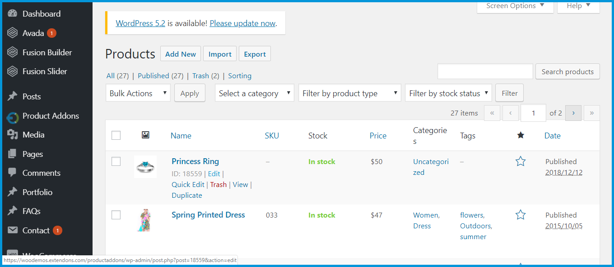
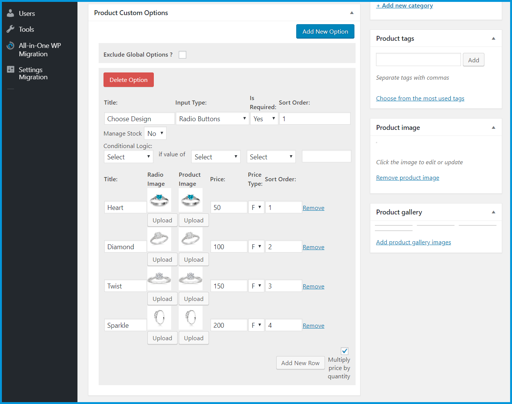
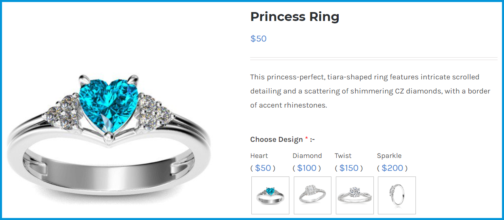
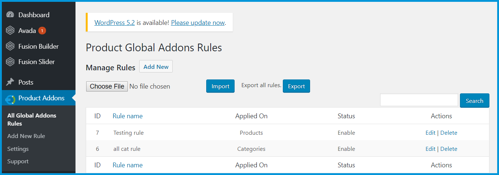
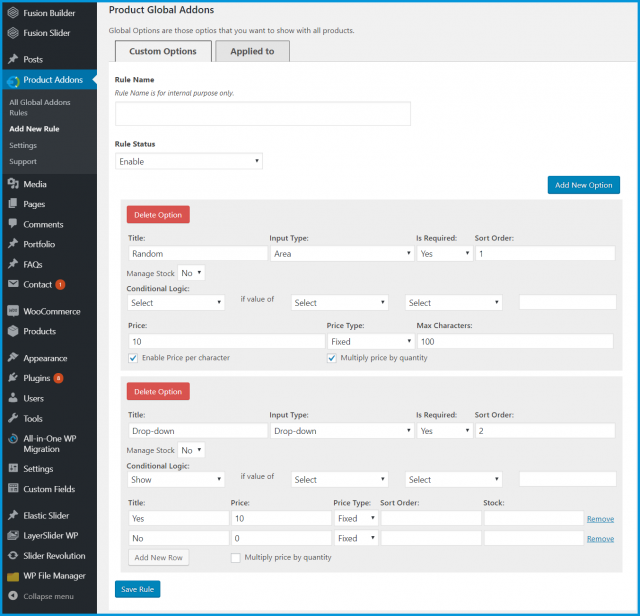

WooCommerce Product Add-Ons Plugin
Add Custom Product Options
This is a quick guide on installation, and updating.
To install WooCommerce Product plugin you must have a working and latest version of WordPress and WooCommerce plugin already installed. For information on installing the WordPress , please see the WordPress Codex - Installing WordPress. For installing the WooCommerce and configure the shop please visit the following link WooThemes - Installing WooCommerce.
-
Now the next step is the WooCommerce Product Add-Ons Plugin, Add Custom Product Options. In the full .ZIP archive you have downloaded from Codecanyon.net. This file is the installable .ZIP archive you can install via WordPress.
Now is time to install WooCommerce Product Add-Ons Plugin, Add Custom Product Options, please read these steps carefully.
Installing from WordPress
Follow the steps bellow to install from WordPress Admin Dashboard
-
Navigate to Plugins
-
Click Install Plugins and click Add New
-
Click the Upload Plugin button
-
Navigate the .ZIP on your computer and click Install Now
-
When installation is done please click Activate to activate plugin
Installing using FTP
Follow the steps bellow to install using FTP
-
Unzip the provided .ZIP file to a desired location on your computer. These extracted files will be uploaded later via FTP
-
Connect to your server via FTP (Use FileZilla or any other FTP client)
-
Navigate to /wp-content/plugins/ server directory
-
Locate the local directory where you have unzipped the archive
-
Upload local folder to remote /wp-content/plugins/
-
To activate the newly installed plugin navigate to Plugins and click the Activate button within the WooCommerce Request a Quote Plugin - Ask for Quotation
Update from WordPress Admin
Follow the steps bellow to update from WordPress Admin Dashboard
-
Navigate to Plugins
-
Find the currently installed WooCommerce Product Add-Ons Plugin, Add Custom Product Options and click Deactivate
-
After deactivation click Delete to remove the old version (your saved setting will not be lost)
-
Click Install Plugins and click Add New
-
Click the Upload Plugin button
-
Navigate the new version archive .ZIP file on your computer and click Install Now
-
When installation is done please click Activate to activate plugin
Update using FTP
Follow the steps bellow to update using FTP
-
Unzip the new version archive .ZIP file to a desired location on your computer. These extracted files will be uploaded later via FTP
-
Connect to your server via FTP (Use FileZilla or any other FTP client)
-
Navigate to /wp-content/plugins/ server directory and delete the current plugin folder
-
Locate the local directory where you have unzipped the new version archive .ZIP file
-
Upload local folder to remote /wp-content/plugins/
After installation of plugin, login to admin panel and flush your cache storage.
At the backend go to Products. Here you will the list of the products on your store. Edit any product to continue.

Now scroll down and you can add your Custom Product Options information as par your requirement. For the purpose of this demo we have added to following information.

Note: Please go to the product sheet to learn more about the featues of Product Addons
Now at the front end your product will be displayed as shown below. You can also go back to edit this information.

At the backend go to Product Addons. Here you will the list with all the Global Rules. You also can Import or Export rules here as CSV file.

Click on Add New to continue.
Here you can create create global product addons rules as diplayed below. You can always edit this information as per your requirement.

Note: Global Rules will not be applied on any product with Exclude Global Rules enabled.